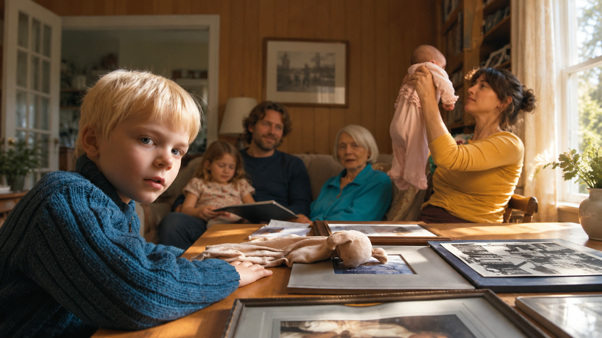
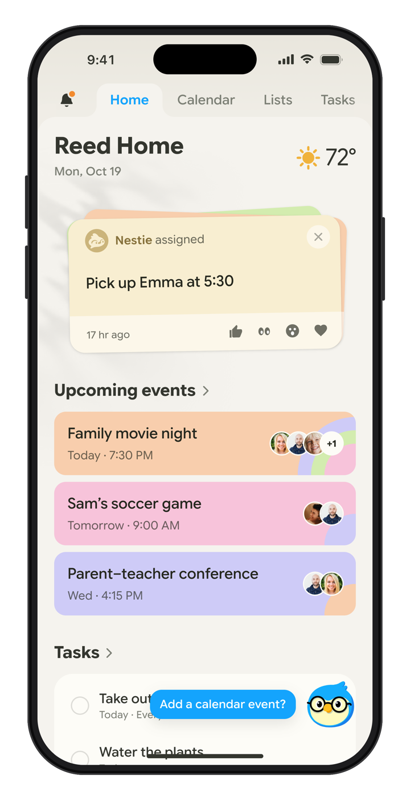
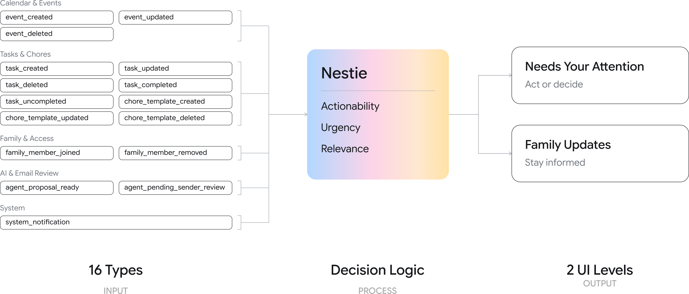
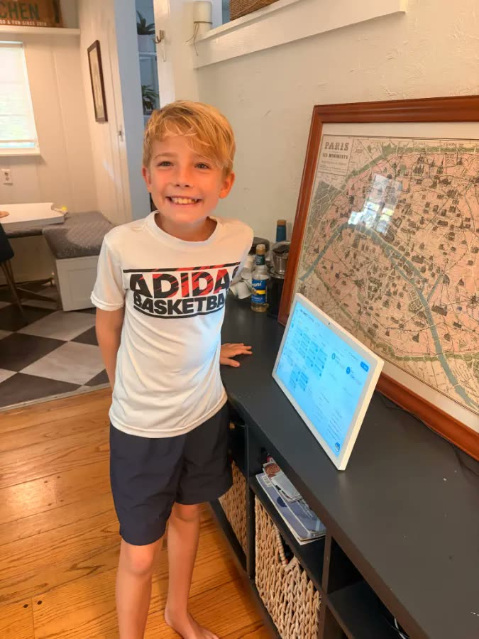
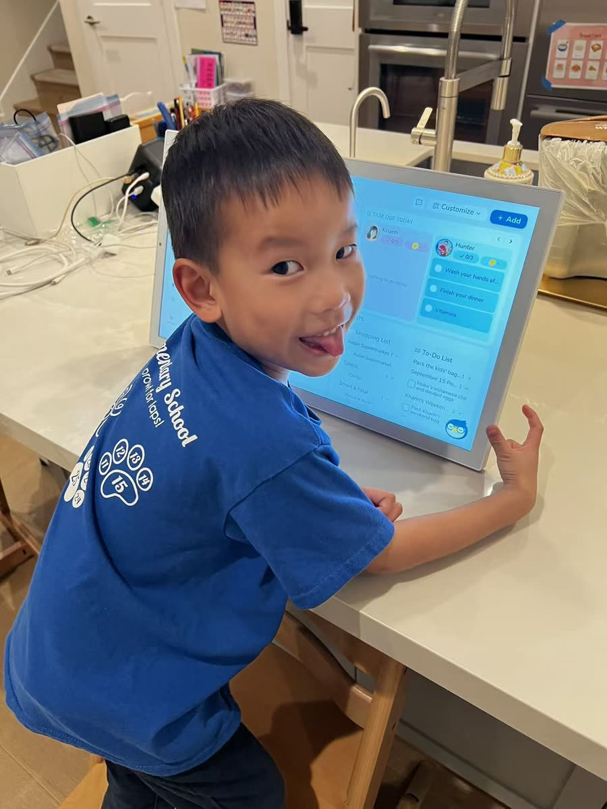
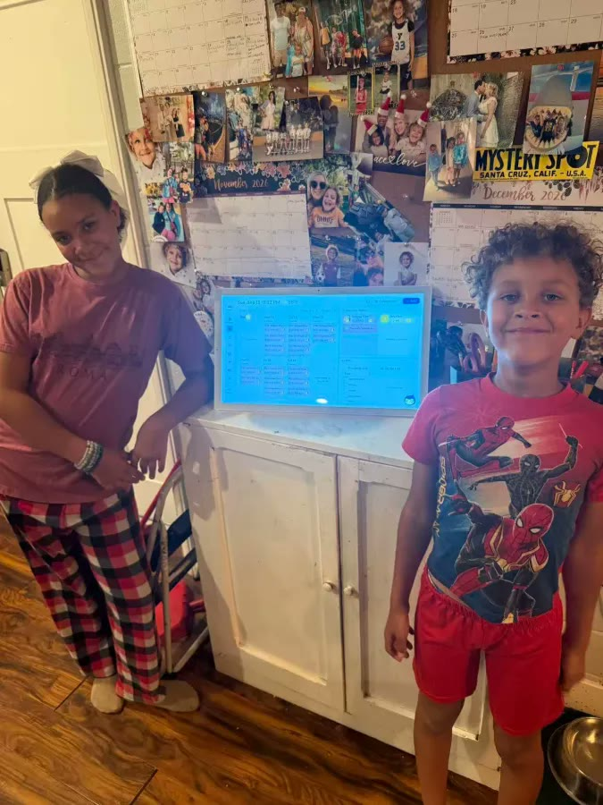
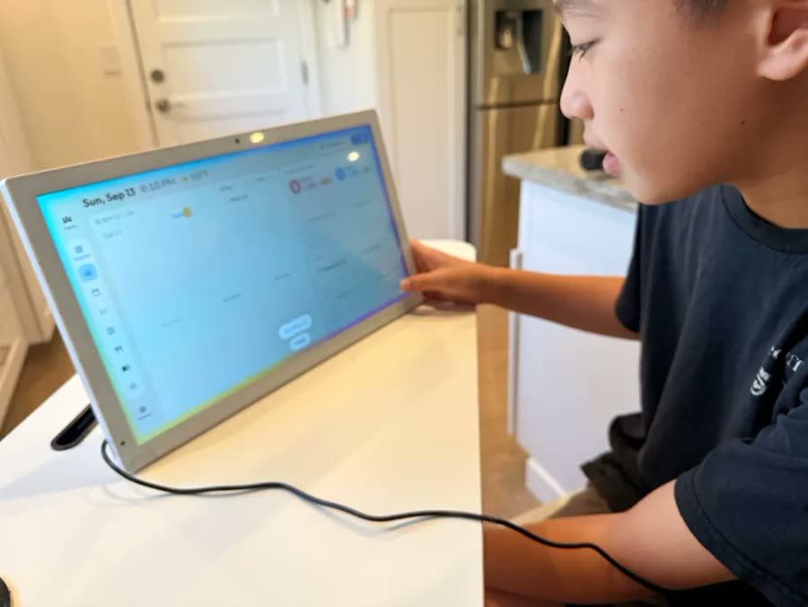
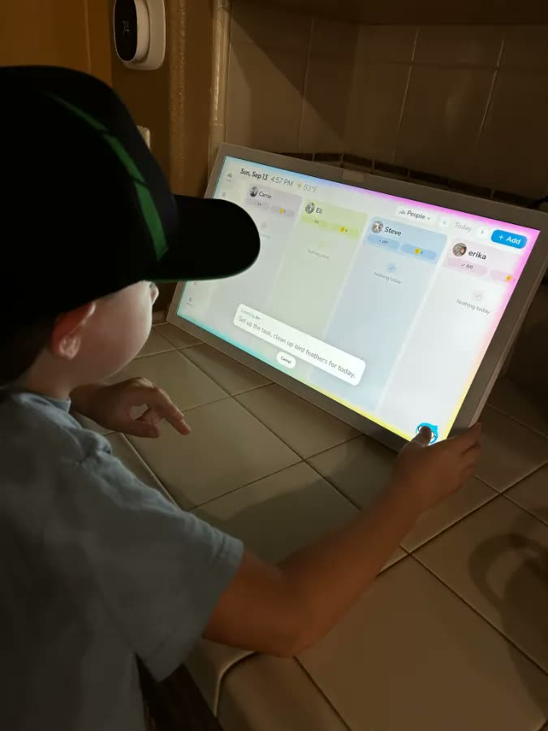
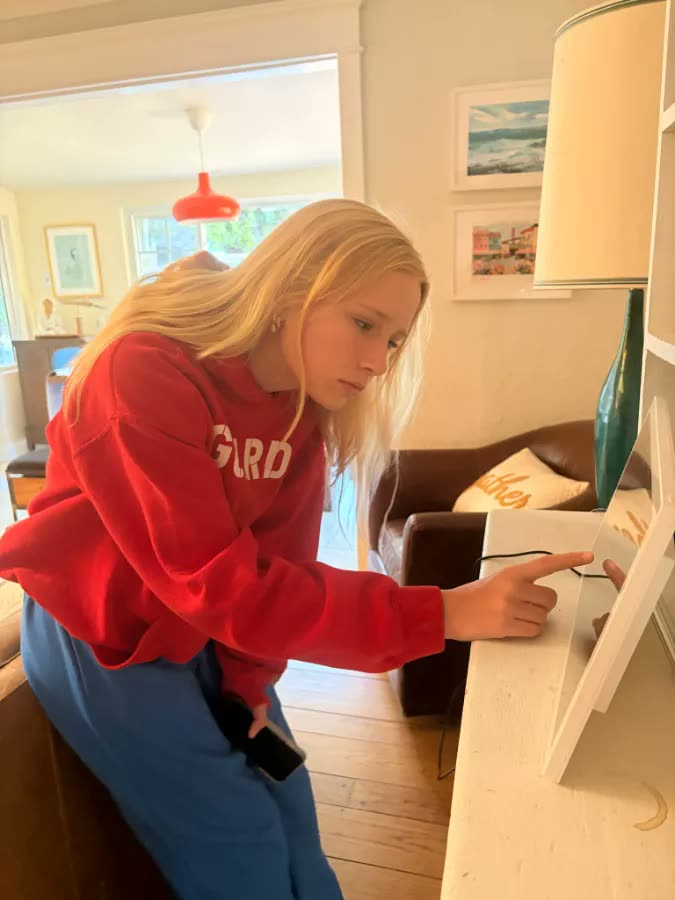

AI adoption · App
50 85%
Tasks added by voice, photo or chat, May to Aug

Nestify is a family copilot made up of a shared smart display and a mobile app. Families hand things off however is easiest: say it out loud, snap a photo, or forward an email. Nestify turns that multimodal input into plans, reminders and follow-ups. I designed both products from 0 to 1, shaping how families capture information, manage daily life, and work with AI.
I defined cross-app voice interactions, dynamic feedback states, and multimodal AI onboarding. The biggest shift was AI adoption: families went from handing off 2 tasks a week to 9.5. Onboarding completion reached 83%, Nestify secured 1,000+ pre-orders, and the work supported the company’s seed round.
My deliverables
Collaborators
3-person Product Design team
Engineering & Hardware teams
Founding team
Multi-child families run on their parents. With two or more school-age kids who can’t yet manage their schedules independently, parents carry the logistics and mental load for everyone, well beyond their personal calendars.

How might a family hand off daily life to AI, from start to finish?
#1How do we keep the whole family in sync?
#2How do families learn to hand things off to AI?
#3How does AI get things done?
My principles come from my years in HCI research: design AI with human verbs. In a family home, that came down to one question: what would a good butler do?
Showcase
Nestify is a shared smart display for the home, with a mobile app for parents. Families can speak up, snap a photo, or forward an email, and Nestify organizes everything to keep everyone in sync.
Challenge #1 · Share information
The display opens to a person, not a feature. Each family member has their own view with their day, their tasks and their rewards, and can customize it to make it their own. The AI recognizes who is speaking and switches to their page.

Challenge #2 · Hand off to AI
AI is the entry closest to your thumb: always one tap away at the bottom of the screen.
Onboarding asks every family to sync their calendar and answer one question about what matters to them at home. From those two, Nestie gives them personalized voice guidance for their first try.
After that, AI is woven into the habits they already have. Every form for adding things by hand opens with an AI shortcut at the top, and when someone finishes by hand, Nestie follows with a contextual tip: next time, just tell me. It’s faster.

Challenge #3 · Get things done
To make reminders and follow-ups simple, the system sorts 16 event types into just two levels: Needs Your Attention for things that require action, and Family Updates for things you just need to know. Updates stay quietly in the notification center, where family members can react with an emoji to appreciate each other’s contributions, and Nestify reaches out only at the right moment. You can also set how strong a reminder is: a gentle notification, or a strong reminder like a voice call with Call me.

Beyond the product
I built AI tools that take the team from ideation to production code: a Slack design agent that turns team discussion into working prototypes, and a Flutter design inspector that lets me fine-tune UI right in the simulator and flags any element that isn’t using a design token.
These tools have been in use for four months, and every designer on the team uses them daily. Designers move faster, take more ownership of what ships, and contribute code more safely.
Impact
AI adoption · App
50 85%
Tasks added by voice, photo or chat, May to Aug
AI hand-offs · App
2 9.5
Tasks handed off to AI per family, per week
Demand · Hardware
1000+
Families pre-ordered, and the seed round closed






Real Nestify families, shared with permission.
Nestify taught me how to move fast in ambiguity: instead of waiting for a complete roadmap, I learned to make decisions from small, early data and iterate quickly with real families.
It also changed how I approach AI design. The most natural AI experiences come from observing how people actually talk and interact with one another, and turning that into a design that balances the different needs and aesthetics of both kids and parents.